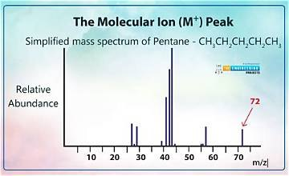

Pic ion phân tử

Image source: Topic 3 image sources
| Vietnamese | Pic ion phân tử / Peak ion phân tử |
|---|---|
| English | Molecular ion peak |
| Pronunciation | /məˈlekjələr ˈaɪən piːk/ or /məˈlekjələr ˈaɪən/ |
| Word type | Cụm danh từ (n.) |
Meaning (Vietnamese)
Pic ion phân tử
Meaning (English)
The peak corresponding to the molecular ion in a mass spectrum.
Example
The molecular ion peak may help determine the molecular mass.
Pic ion phân tử có thể giúp xác định phân tử khối.
Another definition from the notes
Đỉnh tương ứng với ion phân tử trong phổ khối
The peak corresponding to the molecular ion in a mass spectrum
Source of information: Topic 3 notes (see Sources)